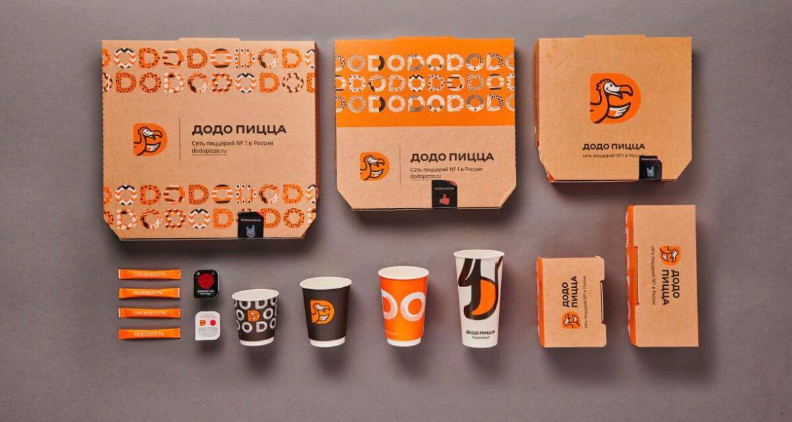

Отзыв клиента
Мне очень нравится эта пиццерия. Именно эта. Здесь очень чисто, просторно, а главное очень вкусно. Эта самая вкусная пиццерия из всех пиццерий додо. Персонал добрый. Кстати, время приготовления 10-15 мин, не больше! Очень хорошо, уютно.
— Сафия Садыкова, отзыв от 13 сентябрь 2026 г. ★★★★★
Как сказал один из постоянных клиентов, время приготовления
10–15 минут, не больше
— Сафия Садыкова, 13 сентябрь 2026 г.
Оценка: ★★★★★
Ali Aliev, 14 сентябрь 2026 года
Ужасное обслуживание персонала. Сегодня приехали, сделали заказ на вынос в 18:14, ожидание сказали 15 минут, в принципе как и везде. Но нашу пиццу почему-то решили не готовить, после нас заказ сделали 3-4 человека, и они уже получили свои пиццы, ушли. Когда мы подошли уточнить сколько ещё ждать, нам начали говорит про то что сломалась печь. Окей, тогда вопрос как людям,пришедшим после нас её приготовили и отдали. По итогу потратили 40 минут в пустую, спасибо что хоть деньги вернули. Ужасная точка, пицца вкусная, но вот обслуживание . И это не первый раз, ранее не хотелось оставлять негативный отзыв, но тут точка кипенияОценка: ★☆☆☆☆
Маргарита, 14 сентябрь 2026 года

